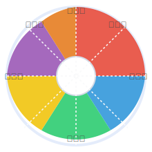

「企業色相環」とは？
企業色相環は、個人投資家や企業分析に関心のある全ての人に向けて、企業の多次元的な特徴を色と形で"直感的"に伝えるための新しい可視化サイトです。
従来の数値やレーティングだけでは捉えきれない「変革性・安定性・社会性・自律性・伝統性・国際性」の6次元を独自の色相環（カラーホイール）で表現し、健全度は白～黒のグラデーションバーで一目で確認できます。
- ✔ 6色のセクターで多様な企業性格を可視化
- ✔ 健全度バーで経営の総合健全性をシンプルに判定
- ✔ 透明性重視の計算方法とデータ出典明記
- ✔ スマホ・PC問わず見やすい明快なデザイン
投資判断や企業理解の新しい「インスピレーション」としてご活用ください。
変革性
革新への投資、チャレンジ精神、変化への適応力を評価します。技術革新や新規事業への積極性を示します。
安定性
財務健全性、持続可能な経営、リスク管理能力を評価します。長期的な成長の土台となる要素です。
社会性
環境配慮、社会貢献、ステークホルダーとの関係を評価します。企業の社会的責任に対する姿勢を示します。
自律性
個の尊重、創造性、柔軟な組織文化を評価します。イノベーションを生み出す組織の風土を示します。
伝統性
歴史・伝統の尊重、専門性の深さ、ブランド力を評価します。長年にわたって培われた企業の強みを示します。
国際性
グローバル展開、多様性受容、異文化適応力を評価します。世界市場での競争力とポテンシャルを示します。
